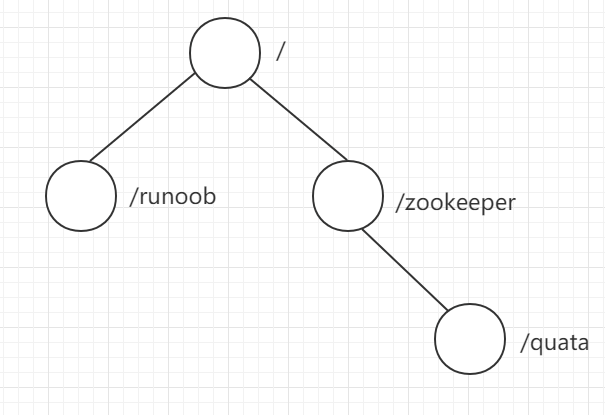
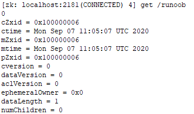
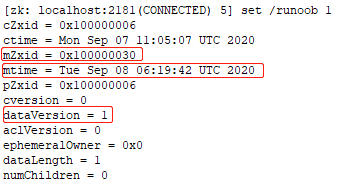
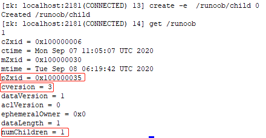

Modelo de datos
En zookeeper, se puede decir que todos los datos almacenados en zookeeper están compuestos por znode, los nodos también se denominan znode, y almacenan datos en forma de clave/valor.
La estructura general es similar al modo del sistema de archivos de Linux, se almacena en una estructura de árbol. Donde la ruta raíz/comienza.
Ingrese al directorio bin de la instalación de zookeeper, abra la terminal de línea de comandos con sh zkCli.sh, ejecute el comando "ls /" para mostrar:$ ls / $ ls /zookeeper $ ls /zookeeper/quota

Vemos intuitivamente que los datos almacenados en este momento tienen dos nodos, runoob y zookeeper, en el directorio raíz, y debajo del nodo zookeeper existe el nodo quota.

El nodo runoob fue creado en el capítulo anterior, y se le estableció el valor 0 mediante el cliente Java. Ahora en la terminal de línea de comandos ejecutamosget /runoobpara mostrar los atributos de este nodo.
$ get /runoob

El 0 que se muestra en la primera línea es el valor de ese nodo.
Atributos de estado de Znode
| cZxid | ID de transacción al crear el nodo |
|---|---|
| ctime | Hora de creación del nodo |
| mZxid | ID de transacción de la última modificación del nodo |
| mtime | Hora de la última modificación del nodo |
| pZxid | Indica el ID de transacción de la última modificación de la lista de nodos hijos. Agregar o eliminar nodos hijos afecta la lista de nodos hijos, pero modificar el contenido de datos de los nodos hijos no afecta este ID.(Nota: solo los cambios en la lista de nodos hijos modifican pzxid; los cambios en el contenido de los nodos hijos no afectan a pzxid). |
| cversion | Número de versión de los nodos hijos; cada modificación de un nodo hijo incrementa el número de versión en 1. |
| dataversion | Número de versión de datos; cada modificación de datos incrementa este número de versión en 1. |
| aclversion | Número de versión de permisos; cada modificación de permisos incrementa este número de versión en 1. |
| ephemeralOwner | El sessionID de la sesión que creó este nodo temporal.（**Si el nodo es persistente, entonces el valor de este atributo es 0)** |
| dataLength | La longitud de los datos del nodo. |
| numChildren | La cantidad de nodos hijos que posee el nodo.(Solo se cuenta el número de nodos hijos directos) |
Después de comprender los valores de los atributos de estado anteriores, nosotros/runoobrealizamos una modificación al nodo, ejecutamos el comandoset /runoob 1, como se muestra en la siguiente figura:
$ set /runoob 1

Comparando los resultados anteriores, se puede ver que mZxid, mtime y dataVersion han cambiado.
En/runoobDebajo del nodo, agregamos un nodo hijo más, ejecutamos:
$ create -e /runoob/child 0 $ get /runoob
Consejo:El uso de más comandos se explicará en detalle en capítulos posteriores.
Después de ejecutar el comando en la terminal, se muestra:

Se puede ver/runoobLos valores pZxid, cversion y numChildren del nodo han cambiado correspondientemente.